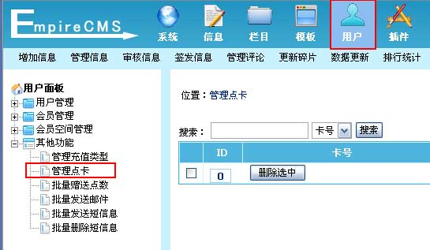
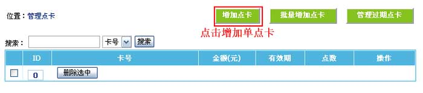
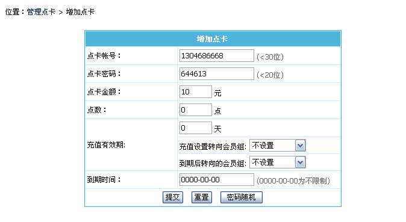
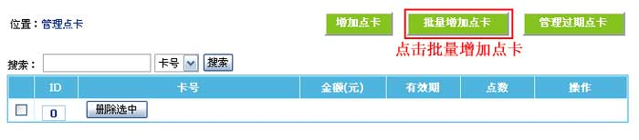
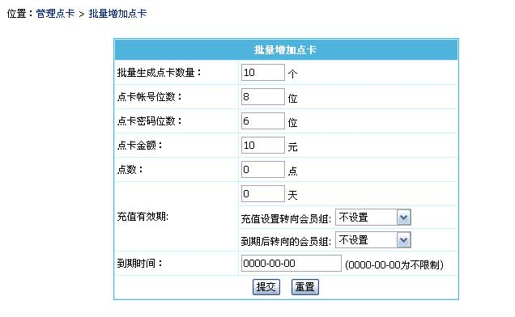

| 二、增加点卡 |
| (一)、增加单点卡： |
| 1、登录后台，单击“用户”菜单，选择“管理点卡”子菜单，进入管理点卡界面： |
|  |
| 2、进入管理点卡界面，点击“增加点卡”按钮进入增加点卡界面： |
|  |
| 3、进入增加点卡界面： |
|  |
| 点卡帐号 |
填写卡号。 |
| 点卡密码 |
填写卡密码。 |
| 点卡金额 |
点卡面额。 |
| 点数 |
充值后给会员充值多少点数。 |
| 充值有效期 |
充值后给会员充值多少有效期。 |
| |
充值设置转向会员组：充值后给会员升级会员组。 |
| |
到期后转向的会员组：有效期到期后转回原来会员组。 |
| 到期时间 |
设置点卡的过期时间(0000-00-00为不限制)。 |
|
| |
| (二)、批量增加点卡： |
| 1、进入管理点卡界面，点击“批量增加点卡”按钮进入批量增加点卡界面： |
|  |
| 2、进入批量增加点卡界面： |
|  |
| 批量生成点卡数量 |
填写一次要生成多少个点卡。 |
| 点卡帐号位数 |
填写卡号位数。 |
| 点卡密码位数 |
填写卡密码位数。 |
| 点卡金额 |
点卡面额。 |
| 点数 |
充值后给会员充值多少点数。 |
| 充值有效期 |
充值后给会员充值多少有效期。 |
| |
充值设置转向会员组：充值后给会员升级会员组。 |
| |
到期后转向的会员组：有效期到期后转回原来会员组。 |
| 到期时间 |
设置点卡的过期时间(0000-00-00为不限制)。 |
|